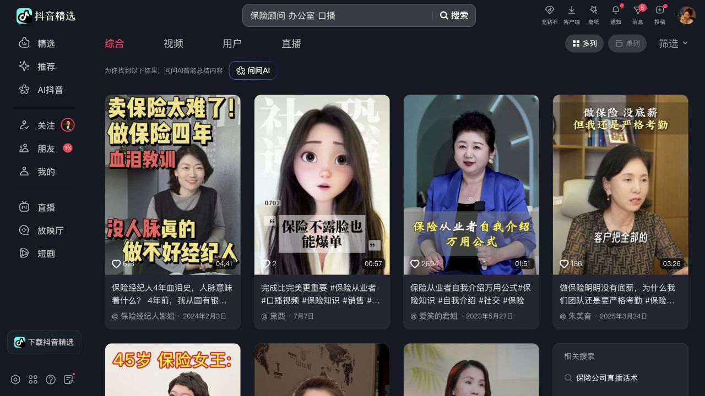
保险顾问办公室18条 · 高产口播仍占主流，头部和审美双达标者稀少
DAILY VISUAL MONITOR / DAY 02
今天围绕保险办公室、女性企业家访谈、商务人物纪录、心理专家访谈、财经生活场景与竖屏访谈继续扩样。82条可见结果中，最接近标杆的是“杨一面对面”；主页母版稳定，但动态核验发现真实视频仍是16:9横屏源，最终停在83分。
搜索不再泛搜“保险大V”，而是按场景与人物关系找画面。第一轮只看人物、场景、构图、光线和色彩，不用观点内容替代审美。


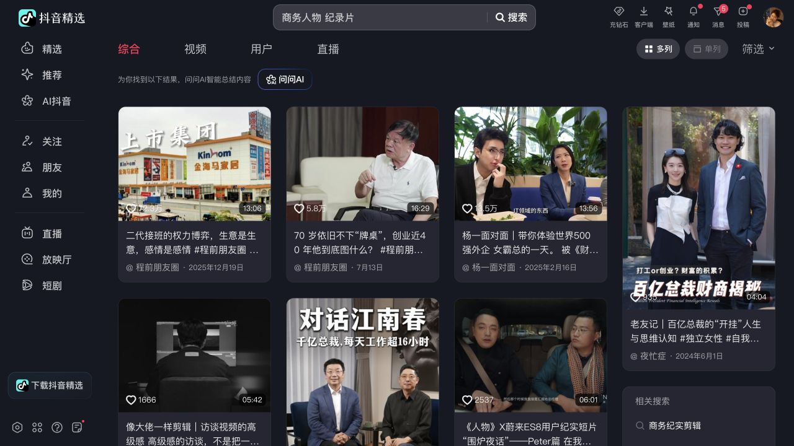
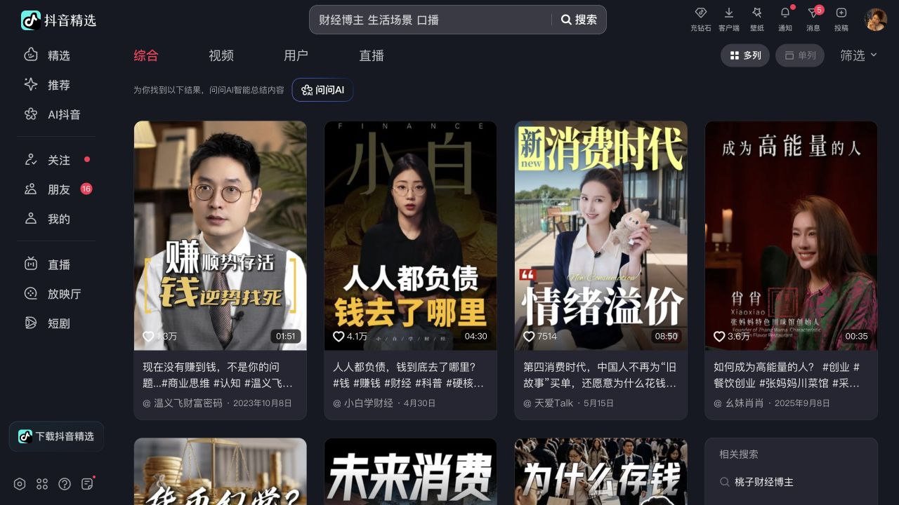
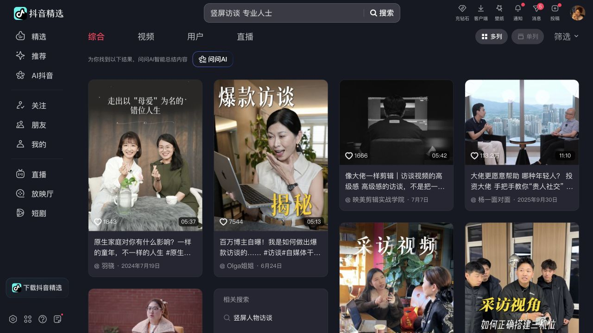
粉丝量只证明账号成熟，主页复现证明母版存在，动态核验才决定这套画面能否进入拍摄参考库。
下表只评价画面系统，不评价内容能力。静态预评分未完成动态视频核验，因此不能直接进入正式标杆池。
| 账号 | 粉丝 | 视觉判断 | 关键原因 | 结论 |
|---|---|---|---|---|
| 杨一面对面 | 167.0万 | 83 / 动态终评 | 主页访谈母版稳定；真实视频为16:9横屏源，竖屏有效面积不足 | 近线观察 |
| 卡尼酱 | 91.0万 | 80 / 静态预评 | 双人访谈复现明显，人物关系清楚；标题偏重且生活内容混入 | 继续观察 |
| 天爱Talk | 80.0万 | 78 / 静态预评 | 杂志化封面统一，但后期合成强，真实拍摄场景证据不足 | 继续观察 |
| 杨天真 | 482.0万 | 77 / 系列预评 | 访谈栏目有稳定母版，账号整体混合旅行、生活、口播与访谈 | 系列参考 |
| 王艺妍妤Yanyu | 115.8万 | 72 / 静态预评 | 个别演讲和顾问场景成立，主页自拍、旅行和工作画面混杂 | 不入库 |
| 李惠心理 | 129.1万 | 待复核 | 搜索帧具备暖调专业感；主页作品区持续加载失败，不用单帧代替证据 | 等待复查 |
这是今天最值得保留的反例。主页看起来像一套竖屏访谈母版，但打开代表视频后，真正播放区域是16:9横屏。
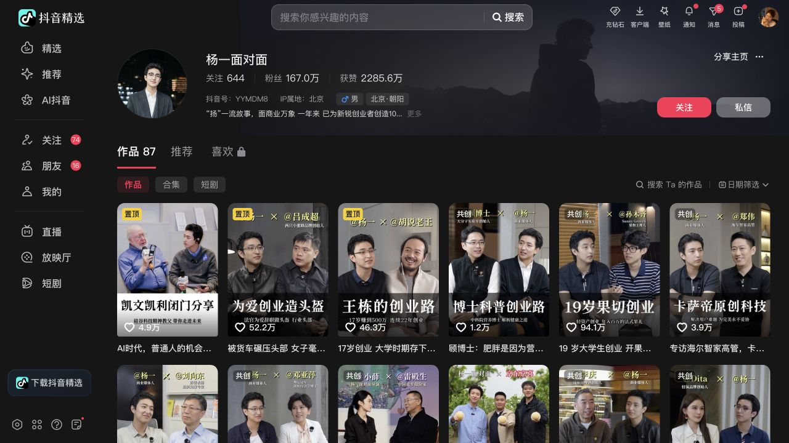
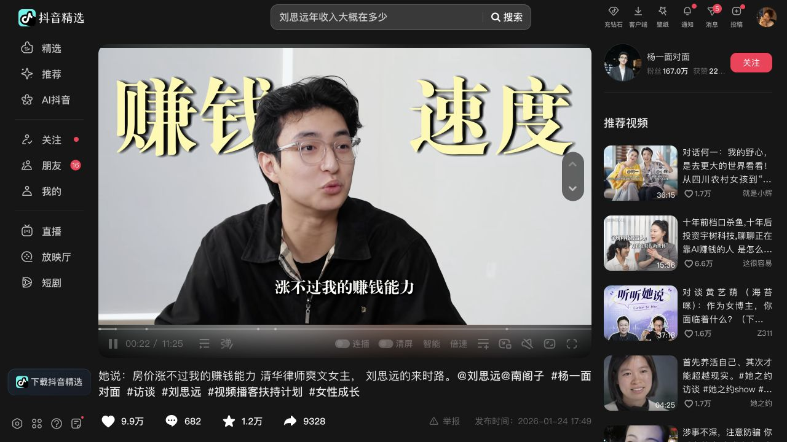
双人关系明确，人物轮廓与肤色稳定，机位、服装和采访语境能够连续复用，账号量级也通过跨行业核心头部门槛。
真实视频为横屏构图，竖屏播放时会压缩人物有效面积；大字号标题还会与脸部竞争。它适合作为横屏访谈参考，不适合作为抖音竖屏母版直接照搬。
这些画面不是完全不好，而是还没达到“可直接匹配人物IP并长期复制”的标准。
竖版封面可以重新裁切和加标题，但真实视频源仍可能是横屏。判断顺序必须从主页封面继续走到实际播放。
杨天真的访谈栏目成立，但账号整体还包含旅行、生活和商业内容。可以借栏目母版，不能把整个主页当视觉系统。
财经账号常用杂志字体、拼贴和合成建立高级感。去掉文字后，人物、灯光和场景未必仍能独立成立。
这组对照能看出：同样达到粉丝门槛，画面系统的稳定程度仍然差异很大。
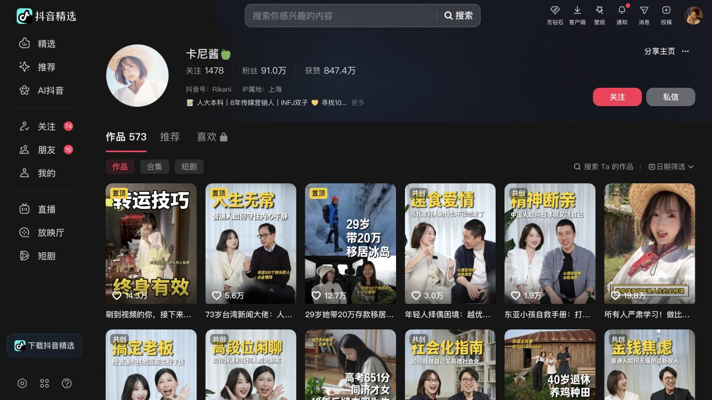
访谈关系清楚，人物在白色场景中分离良好；标题体量和生活内容混入拉低整体稳定性。
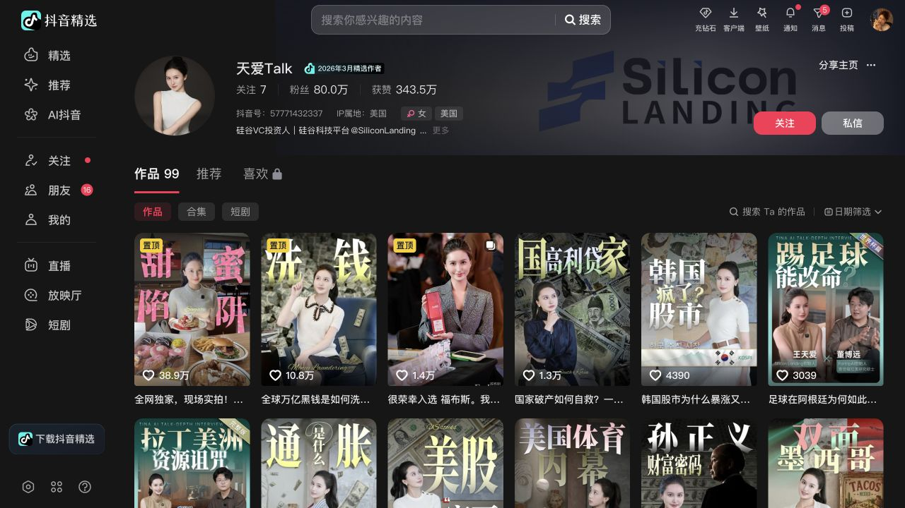
黑金与杂志化封面建立栏目辨识度，但拍摄层面的可复制信息少于后期包装信息。
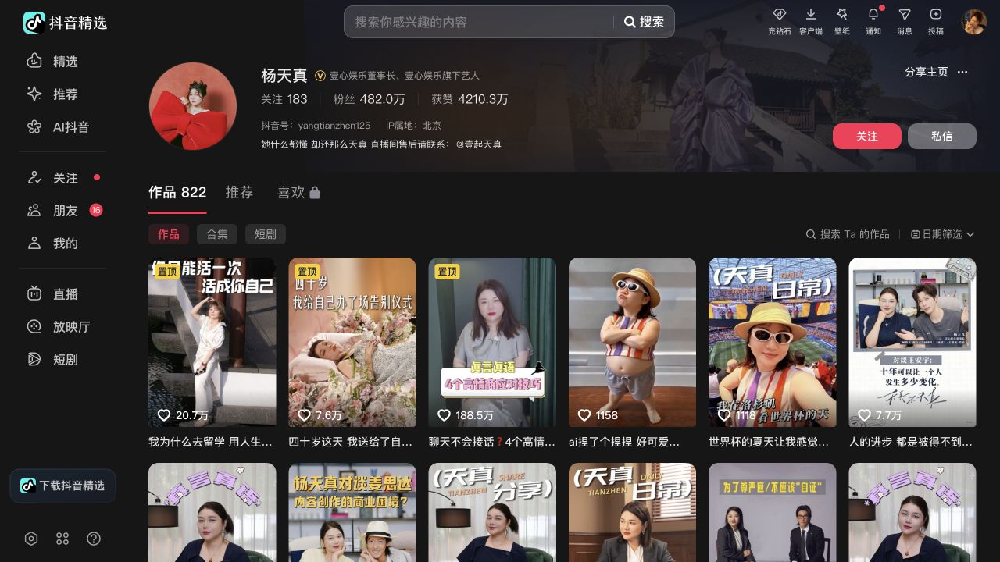
一个账号内部包含多种成熟栏目，适合做系列级拆解，不适合提炼成单一主页母版。
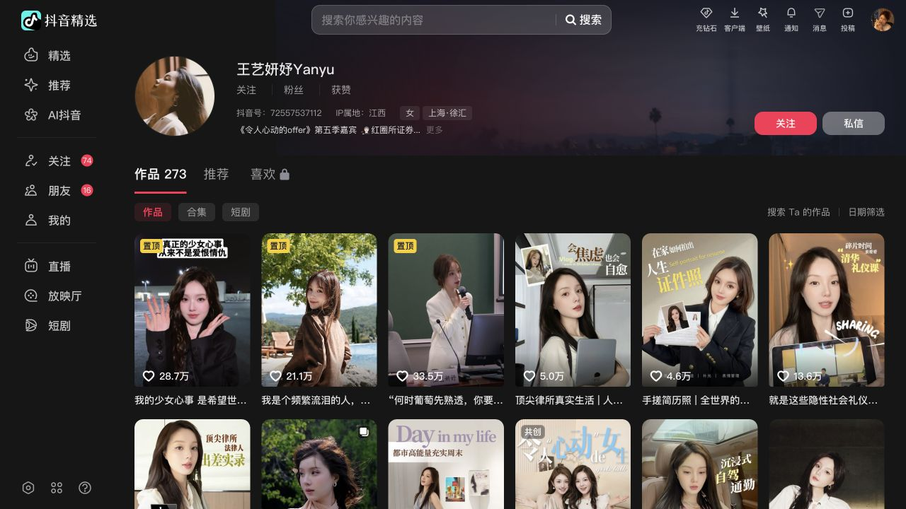
人物状态优秀，专业身份真实，但主页画面由自拍、旅行、演讲和顾问场景共同组成。
统计口径为2026年7月20日至26日。飞书表内共有73条脚本记录，但只有22条附有可核验成片；以下次数和占比全部以22条成片为母数。字幕颜色、标题居中、画中画、羽化素材和信息卡只算包装变体，不重复计为画面母版。
| 画面母版 | 场景与构图 | 使用IP | 次数 | 占比 |
|---|---|---|---|---|
| 湖景户外坐播 | 人物正面坐于导演椅，中景至全身，湖面与绿植虚化 | 荷花、迎春 | 8 | 36.4% |
| 黑金桌前近景 | 暖暗室内、人物偏侧近景，穿插黑金数据卡与说明页 | 释磊 | 3 | 13.6% |
| 舞台站播 | 人物全身站立持麦，冷色舞台与观众虚化 | 芊含 | 2 | 9.1% |
| 舞台坐播 | 人物坐于活动现场，前景保留观众轮廓与舞台光 | 芊含 | 2 | 9.1% |
| 车内口播 | 驾驶位中近景，方向盘形成固定前景锚点 | 芳芳 | 2 | 9.1% |
| 室内桌前近景 | 人物居中近景，桌面书本形成大面积前景 | 芳芳 | 2 | 9.1% |
| 暖调客厅坐播 | 人物正面椅坐，暖光空间，保留上半身与手势 | 芊含 | 1 | 4.5% |
| 暖调桌前特写 | 人物靠近桌面与镜头，生活化室内环境，景别更紧 | 芊含 | 1 | 4.5% |
| 暖光椅坐中景 | 人物完整坐姿，蓝色百叶与暖灯形成冷暖对比 | 释磊 | 1 | 4.5% |
荷花与迎春共用同一套湖景坐播，占全部成片36.4%；芳芳的车内与桌前也各连续复用2次，说明生产已经出现稳定模板。
画中画、羽化素材、全屏B-roll、黑金信息卡，以及黑白字幕切换，能增加信息密度，但没有改变人物、机位、场景和景别。
湖景坐播和桌前近景合计占一半以上；办公室顾问、双人访谈、行动式商务纪录、家庭互动等母版，上周没有形成稳定产量。


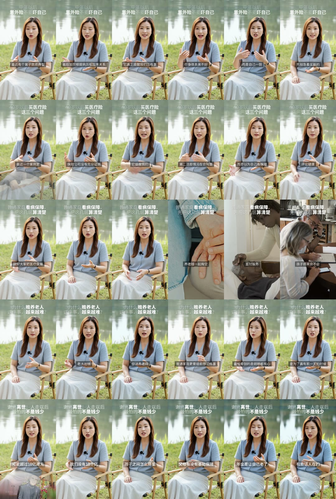
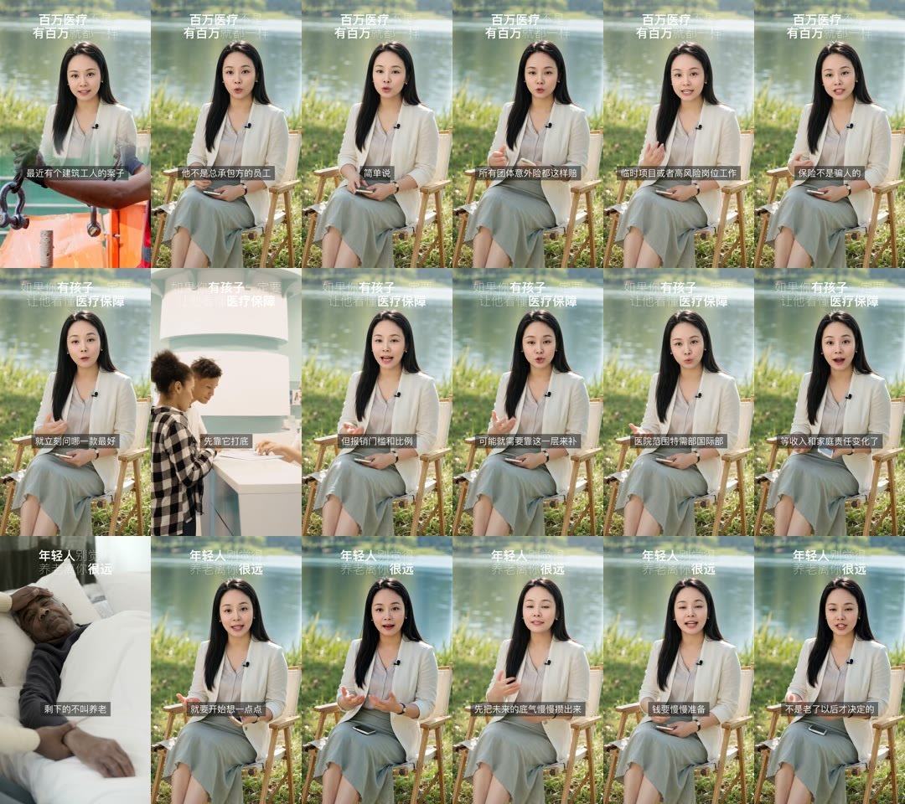
高制作访谈仍以横屏为主；个人IP中的竖屏原生高完成度访谈明显稀缺。今后“画幅是否竖屏原生”必须独立计分，不能由主页封面推断。
继续找保险30万以上个人IP，同时把跨行业搜索收窄到竖屏原生办公室顾问、单人侧访谈、行动式商务纪录和暖调陪伴场景。